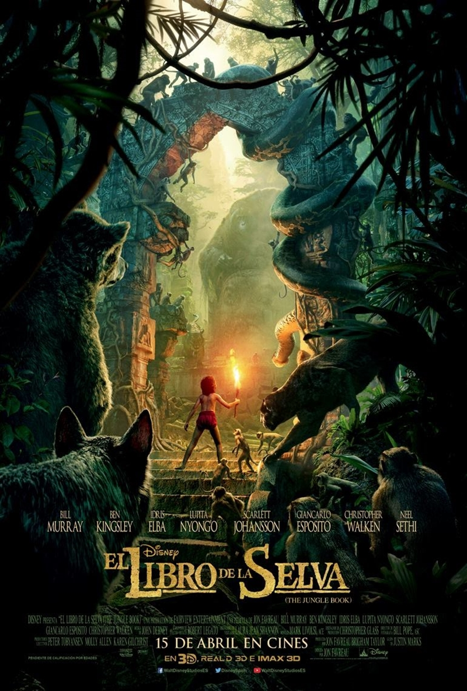
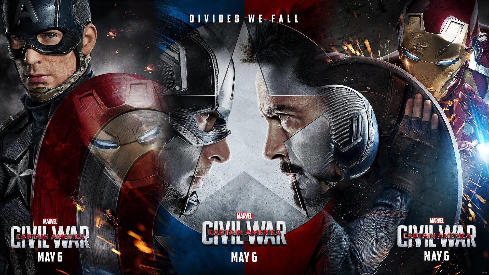
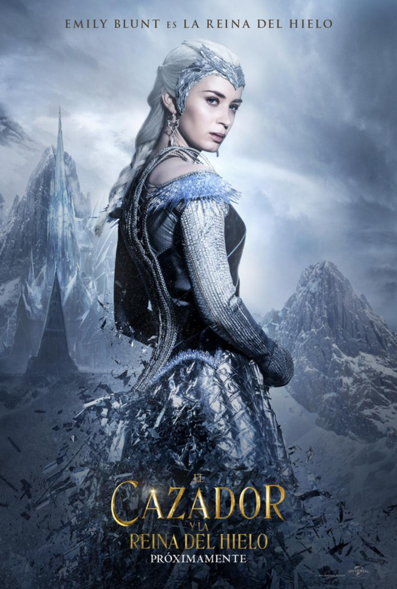

-

Director: Zack Snyder
Genero: Ciencia Ficcion
Sinopsis: Superman se ha convertido en la figura más controvertida del mundo. Mientras que muchos siguen creyendo que es un emblema de esperanza, otro gran número de personas lo consideran una amenaza para la humanidad.
-
Director: Masayuki Ochiai
Genero: Terror
Sinopsis: Una maestra de escuela llamada Yui visita la casa de un chico llamado Toshio Saeki, que ha estado ausente del colegio por un largo periodo de tiempo. Cuando llega, revive el terrible drama que se produjo en el hogar de los Saeki tiempo atrás. Una caja de cartón en un armario es la clave para revelar una verdad oculta por mucho tiempo.
-

Diretor: Jon Favreau
Genero: Aventura
Sinopsis: libro de la selva es, en realidad, una recopilación de cuentos. De cualquier forma, los primeros ocho son parte de una misma historia. La misma comienza cuando un joven matrimonio pierde a su bebé en los bosques de la India miéntras trataban de huir del ataque de Shere Khan (un enorme y feroz tigre de bengala y el villano principal del libro).
-

Director: Mark Millar
Genero: Ciencia Ficcion
Sinopsis: Civil War cuenta la implementación y las consecuencias del Acta de Registro Sobrehumano, un proyecto de ley que requiere el registro obligatorio de cualquier persona ubicada en Estados Unidos con súper poderes.
-

Director: Cedric Nicolas Troyan
Genero: Accion Aventura
Sinopsis: Durante décadas, Freya, la Reina de Hielo (Emily Blunt), ha habitado un lejano e invernal palacio, lejos de su reino. Tras sufrir una desgarradora traición, Freya tuvo que huir y abandonar su reino.
{kind=link}
{kind=link}
{kind=link}
{kind=link}